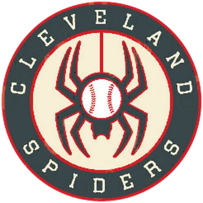

Historical player · P
Steve Dunning
- Position
- P
- Bats/Throws
- R/R
- Height/Weight
- 6'2", 205 lb
- Born
- May 15, 1949 in Denver, CO
- Major-league seasons
- 1970–1977 (7)
- Main franchise
 Cleveland Spiders
Cleveland Spiders- Status
- Retired
| Year | Team | Lg | G | PA | AB | R | H | 2B | 3B | HR | RBI | SB | CS | BB | K | AVG | OBP | SLG | OPS | WAR |
|---|---|---|---|---|---|---|---|---|---|---|---|---|---|---|---|---|---|---|---|---|
| 1970 | Cleveland Guardians | AL | 19 | 35 | 31 | 0 | 5 | 0 | 0 | 0 | 1 | 0 | 0 | 1 | 14 | .161 | .188 | .161 | .349 | -0.4 |
| 1971 | Cleveland Guardians | AL | 32 | 68 | 55 | 5 | 10 | 1 | 0 | 1 | 7 | 0 | 0 | 4 | 19 | .182 | .233 | .255 | .488 | -0.4 |
| 1972 | Cleveland Guardians | AL | 20 | 39 | 33 | 6 | 9 | 1 | 0 | 3 | 4 | 0 | 0 | 3 | 9 | .273 | .333 | .576 | .909 | 0.4 |
| 1976 |  Montreal Expos Montreal Expos | NL | 32 | 20 | 15 | 0 | 2 | 0 | 0 | 0 | 0 | 0 | 0 | 2 | 7 | .133 | .235 | .133 | .369 | -0.2 |
| Career | 4 seasons | 103 | 162 | 134 | 11 | 26 | 2 | 0 | 4 | 12 | 0 | 0 | 10 | 49 | .194 | .248 | .299 | .547 | -0.6 |
| Year | Team | Lg | G | GS | W | L | SV | CG | SHO | IP | H | ER | BB | K | HR | ERA | WHIP | K/9 | WAR |
|---|---|---|---|---|---|---|---|---|---|---|---|---|---|---|---|---|---|---|---|
| 1970 | Cleveland Guardians | AL | 19 | 17 | 4 | 9 | 0 | 0 | 0 | 94.1 | 93 | 52 | 54 | 77 | 16 | 4.96 | 1.56 | 7.3 | -0.1 |
| 1971 | Cleveland Guardians | AL | 31 | 29 | 8 | 14 | 1 | 3 | 1 | 184.0 | 173 | 92 | 109 | 132 | 25 | 4.50 | 1.53 | 6.5 | -0.2 |
| 1972 | Cleveland Guardians | AL | 16 | 16 | 6 | 4 | 0 | 1 | 0 | 105.0 | 98 | 38 | 43 | 52 | 16 | 3.26 | 1.34 | 4.5 | -0.5 |
| 1973 | Cleveland Guardians | AL | 4 | 3 | 0 | 2 | 0 | 0 | 0 | 18.0 | 17 | 13 | 13 | 10 | 2 | 6.50 | 1.67 | 5.0 | -0.1 |
| 1973 | Texas Rangers | AL | 23 | 12 | 2 | 6 | 0 | 2 | 0 | 94.1 | 101 | 56 | 52 | 38 | 11 | 5.34 | 1.62 | 3.6 | -0.3 |
| 1973 total | 27 | 15 | 2 | 8 | 0 | 2 | 0 | 112.1 | 118 | 69 | 65 | 48 | 13 | 5.53 | 1.63 | 3.8 | -0.4 | ||
| 1974 | Texas Rangers | AL | 1 | 0 | 0 | 0 | 0 | 0 | 0 | 2.1 | 3 | 5 | 3 | 1 | 2 | 19.29 | 2.57 | 3.9 | -0.3 |
| 1976 |  California Angels California Angels | AL | 4 | 0 | 0 | 0 | 0 | 0 | 0 | 6.0 | 9 | 5 | 6 | 4 | 2 | 7.50 | 2.50 | 6.0 | -0.3 |
| 1976 | Montreal Expos | NL | 32 | 7 | 2 | 6 | 0 | 1 | 0 | 91.1 | 93 | 42 | 33 | 72 | 6 | 4.14 | 1.38 | 7.1 | 1.4 |
| 1976 total | 36 | 7 | 2 | 6 | 0 | 1 | 0 | 97.1 | 102 | 47 | 39 | 76 | 8 | 4.35 | 1.45 | 7.0 | 1.0 | ||
| 1977 | Oakland Athletics | AL | 6 | 0 | 1 | 0 | 0 | 0 | 0 | 18.1 | 17 | 8 | 10 | 4 | 2 | 3.93 | 1.47 | 2.0 | -0.2 |
| Career | 7 seasons | 136 | 84 | 23 | 41 | 1 | 7 | 1 | 613.2 | 604 | 311 | 323 | 390 | 82 | 4.56 | 1.51 | 5.7 | -0.6 |
| Year | Team | Pos | G | GS | Inn | TC | PO | A | E | DP | Fld% |
|---|---|---|---|---|---|---|---|---|---|---|---|
| 1970 | Cleveland Guardians | P | 19 | 17 | 94.0 | 26 | 7 | 17 | 2 | 2 | .923 |
| 1971 | Cleveland Guardians | P | 31 | 29 | 184.0 | 53 | 13 | 38 | 2 | 0 | .962 |
| 1972 | Cleveland Guardians | P | 16 | 16 | 105.0 | 20 | 2 | 16 | 2 | 0 | .900 |
| 1973 | Texas Rangers | P | 23 | 12 | 94.1 | 26 | 9 | 14 | 3 | 0 | .885 |
| 1973 | Cleveland Guardians | P | 4 | 3 | 18.0 | 3 | 0 | 3 | 0 | 0 | 1.000 |
| 1974 | Texas Rangers | P | 1 | 0 | 2.1 | 1 | 1 | 0 | 0 | 0 | 1.000 |
| 1976 | California Angels | P | 4 | 0 | 6.0 | 2 | 0 | 1 | 1 | 0 | .500 |
| 1976 | Montreal Expos | P | 32 | 7 | 91.1 | 23 | 8 | 13 | 2 | 0 | .913 |
| 1977 | Oakland Athletics | P | 6 | 0 | 18.1 | 4 | 1 | 3 | 0 | 1 | 1.000 |
| Career | P | 136 | 84 | 613.1 | 158 | 41 | 105 | 12 | 3 | .924 |
League-leader finishes top 10; 0 times first
| Year | League | Category | Place | Value |
|---|---|---|---|---|
| 1971 | AL | K/9 | 9th | 6.5 |
Seasons before 2002 are real MLB history from the OOTP export, mapped by OOTP onto this league's 30 original franchises (club names are as they were in that season). 2002 is this universe. Player names are as the export stores them (apart from a few renamed in this universe since this dump, such as Babe Ruth): OOTP gives some historical players generated names (the 586-homer career is filed under “Legendre Robinson”), and the site keeps them. Every player links to a page: 2002 players to their season pages, everyone else to a historical career page.